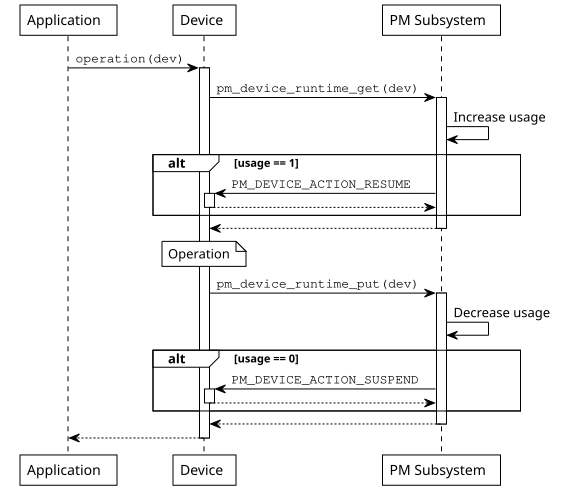
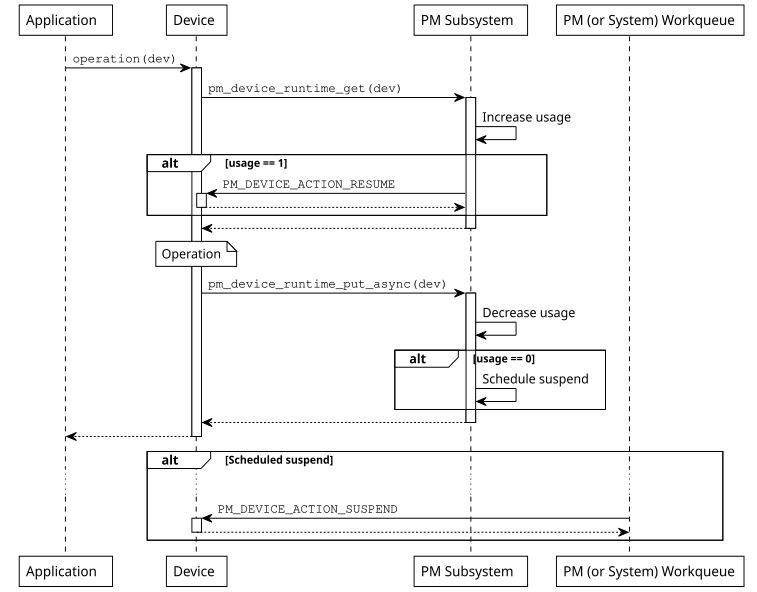

Device Runtime Power Management
Introduction
The device runtime power management (PM) framework is an active power management
mechanism which reduces the overall system power consumption by suspending the
devices which are idle or not used independently of the system state. It can be
enabled by setting CONFIG_PM_DEVICE_RUNTIME. In this model the device
driver is responsible to indicate when it needs the device and when it does not.
This information is used to determine when to suspend or resume a device based
on usage count.
When device runtime power management is enabled on a device, its state will be
initially set to a PM_DEVICE_STATE_SUSPENDED indicating it is
not used. On the first device request, it will be resumed and so put into the
PM_DEVICE_STATE_ACTIVE state. The device will remain in this
state until it is no longer used. At this point, the device will be suspended
until the next device request. If the suspension is performed synchronously the
device will be immediately put into the
PM_DEVICE_STATE_SUSPENDED state, whereas if it is performed
asynchronously, it will be put into the
PM_DEVICE_STATE_SUSPENDING state first and then into the
PM_DEVICE_STATE_SUSPENDED state when the action is run.
For devices on a power domain (via the devicetree ‘power-domains’ property), device runtime
power management automatically attempts to request and release the dependent domain
in response to pm_device_runtime_get() and pm_device_runtime_put()
calls on the child device.
For the previous to automatically control the power domain state, device runtime PM must be enabled
on the power domain device. To enable device runtime PM globally, enable
CONFIG_PM_DEVICE_RUNTIME_DEFAULT_ENABLE. To enable device runtime PM only for
select devices, set the zephyr,pm-device-runtime-auto devicetree property, or use
pm_device_runtime_enable() for the select devices.
Device states and transitions
The device runtime power management framework has been designed to minimize devices power consumption with minimal application work. Device drivers are responsible for indicating when they need the device to be operational and when they do not. Therefore, applications can not manually suspend or resume a device. An application can, however, decide when to disable or enable runtime power management for a device. This can be useful, for example, if an application wants a particular device to be always active.
Design principles
When runtime PM is enabled on a device it will no longer be resumed or suspended during system power transitions. Instead, the device is fully responsible to indicate when it needs a device and when it does not. The device runtime PM API uses reference counting to keep track of device’s usage. This allows the API to determine when a device needs to be resumed or suspended. The API uses the get and put terminology to indicate when a device is needed or not, respectively. This mechanism plays a key role when we account for device dependencies. For example, if a bus device is used by multiple sensors, we can keep the bus active until the last sensor has finished using it.
Note
As of today, the device runtime power management API does not manage device dependencies. This effectively means that, if a device depends on other devices to operate (e.g. a sensor may depend on a bus device), the bus will be resumed and suspended on every transaction. In general, it is more efficient to keep parent devices active when their children are used, since the children may perform multiple transactions in a short period of time. Until this feature is added, devices can manually get or put their dependencies.
The pm_device_runtime_get() function can be used by a device driver to
indicate it needs the device to be active or operational. This function will
increase device usage count and resume the device if necessary. Similarly, the
pm_device_runtime_put() function can be used to indicate that the device
is no longer needed. This function will decrease the device usage count and
suspend the device if necessary. It is worth to note that in both cases, the
operation is carried out synchronously. The sequence diagram shown below
illustrates how a device can use this API and the expected sequence of events.

Synchronous operation on a single device
The synchronous model is as simple as it gets. However, it may introduce
unnecessary delays since the application will not get the operation result until
the device is suspended (in case device is no longer used). It will likely not
be a problem if the operation is fast, e.g. a register toggle. However, the
situation will not be the same if suspension involves sending packets through a
slow bus. For this reason the device drivers can also make use of the
pm_device_runtime_put_async() function. This function will schedule
the suspend operation, again, if device is no longer used.
By default, runtime PM operations are offloaded to the system work queue. However, device drivers must not perform any blocking operations during suspend, as this can stall the system work queue and negatively impact system responsiveness.
To address this, applications can configure runtime PM to use a dedicated work queue
by enabling CONFIG_PM_DEVICE_RUNTIME_USE_DEDICATED_WQ.
If blocking behavior is required—for example, when accessing a slow peripheral
or waiting for a bus transaction—the PM subsystem work queue must be used instead.
Drivers that require this behavior can explicitly request it by enabling
CONFIG_PM_DEVICE_DRIVER_NEEDS_DEDICATED_WQ.
For targets with constrained resources that do not need asynchronous
operations, this functionality can be disabled altogether by
de-selecting CONFIG_PM_DEVICE_RUNTIME_ASYNC, reducing
memory usage and system complexity.

Asynchronous operation on a single device
Implementation guidelines
In a first place, a device driver needs to implement the PM action callback used by the PM subsystem to suspend or resume devices.
static int mydev_pm_action(const struct device *dev,
enum pm_device_action action)
{
switch (action) {
case PM_DEVICE_ACTION_SUSPEND:
/* suspend the device */
...
break;
case PM_DEVICE_ACTION_RESUME:
/* resume the device */
...
break;
default:
return -ENOTSUP;
}
return 0;
}
The PM action callback calls are serialized by the PM subsystem, therefore, no special synchronization is required.
To enable device runtime power management on a device, the driver needs to call
pm_device_runtime_enable() at initialization time. Note that this
function will suspend the device if its state is
PM_DEVICE_STATE_ACTIVE. In case the device is physically
suspended, the init function should call
pm_device_init_suspended() before calling
pm_device_runtime_enable().
/* device driver initialization function */
static int mydev_init(const struct device *dev)
{
int ret;
...
/* OPTIONAL: mark device as suspended if it is physically suspended */
pm_device_init_suspended(dev);
/* enable device runtime power management */
ret = pm_device_runtime_enable(dev);
if (ret < 0) {
return ret;
}
}
Device runtime power management can also be automatically enabled on a device
instance by adding the zephyr,pm-device-runtime-auto flag onto the corresponding
devicetree node. If enabled, pm_device_runtime_enable() is called immediately
after the init function of the device runs and returns successfully.
foo {
/* ... */
zephyr,pm-device-runtime-auto;
};
Assuming an example device driver that implements an operation API call, the
get and put operations could be carried out as follows:
static int mydev_operation(const struct device *dev)
{
int ret;
/* "get" device (increases usage count, resumes device if suspended) */
ret = pm_device_runtime_get(dev);
if (ret < 0) {
return ret;
}
/* do something with the device */
...
/* "put" device (decreases usage count, suspends device if no more users) */
return pm_device_runtime_put(dev);
}
In case the suspend operation is slow, the device driver can use the asynchronous API:
static int mydev_operation(const struct device *dev)
{
int ret;
/* "get" device (increases usage count, resumes device if suspended) */
ret = pm_device_runtime_get(dev);
if (ret < 0) {
return ret;
}
/* do something with the device */
...
/* "put" device (decreases usage count, schedule suspend if no more users) */
return pm_device_runtime_put_async(dev, K_NO_WAIT);
}
Examples
Some helpful examples showing device runtime power management features: